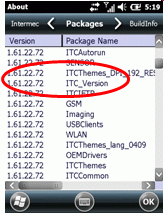
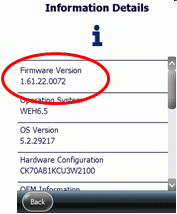
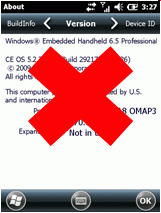

Firmware Version Intermec
Firmware and Software versions are part of the Health log file
see SF article: 000036842-"How to create a log file for support" �
The firmware version on actual Intermec devices can also be found in:
- Start>Settings>System>About:Packages as ITC_Version

- in Device Health Dashboard>Information>Firmware Version

- in Device Health log file (see device \SmartSystems\ScreenCapture\health...log files)
The device's System>About screen is USELESS.

It will contain the MS software build number which may be the same for different firmware versions!
Device information collecting done